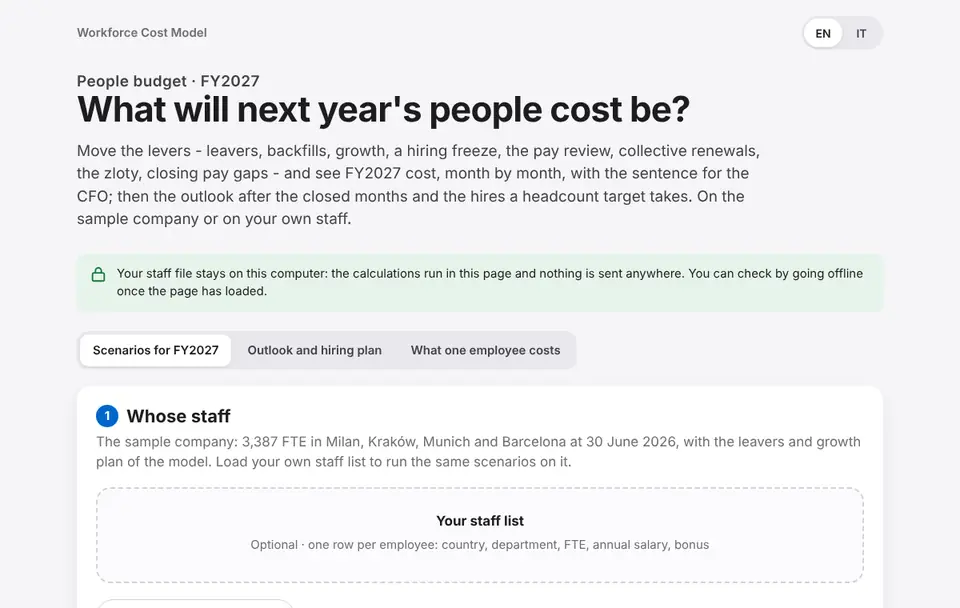

Quanto costerà il personale l'anno prossimo?
Cliente: Un datore di lavoro a Milano, Cracovia, Monaco e Barcellona, a quattro mesi dall'inizio del FY2027.
Quanto costa davvero una persona in ogni paese, perché l'anno scorso il budget è stato superato, quanto costerà il prossimo anno e quanto ci si può fidare di quella previsione?

Cosa ho fatto
- Ho calcolato il costo pieno di ogni dipendente con tutti i contributi del datore di lavoro, massimale per massimale, in quattro paesi, e ho scomposto lo scostamento del FY2026 in volume, mix e tasso.
- Ho previsto il FY2027 mese per mese in cinque scenari, rinnovi contrattuali e zloty compresi, poi l'ho aggiornato con i mesi chiusi e ho trasformato un obiettivo di organico in assunzioni al mese.
- Ho messo alla prova la previsione: le sue regole applicate alla fine di ogni mese del FY2026 con i soli dati di quel giorno, contro la realtà, l'ultimo mese ripetuto e il budget; poi un intervallo verificato sulle stesse prove prima di usarlo.
- Ho costruito un simulatore per la riunione di budget, con il costo di un dipendente in quattro paesi.
Cosa ha trovato
- Le regole battono nettamente il budget e solo di poco l'ultimo mese ripetuto: a muovere questo costo sono le assunzioni, non le uscite, e per mesi l'azienda ha assunto al doppio del ritmo previsto.
- Un intervallo costruito su chi esce è largo pochi decimi di punto e quasi mai giusto; l'intervallo onesto per il FY2027 è di circa ±7%, e anche questo è un minimo.
- Dopo ottobre l'anno è €0,18M oltre il budget per le ragioni sbagliate: meno persone fanno risparmiare €0,60M, un costo per FTE più alto, soprattutto a Cracovia, aggiunge €0,77M.
Con dati reali
- Il costo del personale effettivo mese per mese, con lo storico delle retribuzioni.
- I piani di assunzione per team dal business, così la previsione modella le assunzioni e non solo le sostituzioni.
- Il costo per chiudere i divari retributivi dalla verifica dell'articolo 10 del cliente.
Come è verificato. 1.696 cifre riconciliate tra le formule Excel e pandas, ricalcolate da LibreOffice nella CI; il simulatore verificato sul modello su 43.152 valori; ogni aliquota e massimale in un registro con la sua fonte; i mesi chiusi del FY2027 sono sintetici e lo dichiarano.
Dati sintetici o pubblici; non è consulenza legale, retributiva o finanziaria. Cifre pubblicate il 25 novembre 2026. Domenico Perroni · consulenza HR, people analytics, retribuzioni · Kraków · d0m3n1c0x.github.io